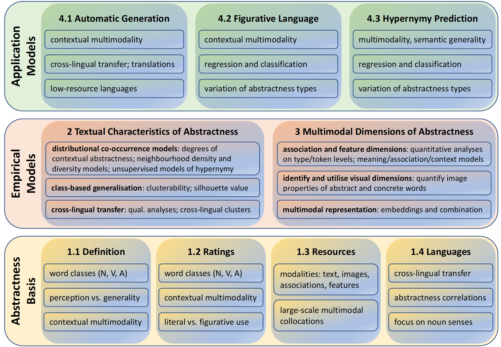

The distinction between abstract and concrete words (such as dream in contrast to banana) represents a semantic categorisation highly relevant for Natural Language Processing (NLP) purposes. In this vein, our project MUDCAT investigates the notion of abstractness from a data-driven and application-oriented point of view. While the most long-standing discussions about abstractness have taken place in the cognitive sciences, we address and enhance critical issues in existing definitions, data collections and characterisations, and broaden and optimise the perspective towards effective exploitation in NLP approaches.
Up to date, definitions, collections and applications of abstractness have mostly been performed on a word-type basis without contextualisation. In contrast, MUDCAT will develop, exploit and apply empirical dimensions of abstractness while paying attention to a token-based, sense-related perspective across word classes (nouns, verbs, adjectives), across modalities (text, associations, features, images) and across languages (English, German, Italian). In this vein, we will collect novel human-generated norms on abstractness and exploit cross-lingual transfer to advance semi-automatic algorithms for norm generation. A major effort at the empirical layer will identify and induce word-class-dependent salient dimensions of abstractness from large-scale corpora, taking into account contextual conditions in the form of syntactic constellations (such as subcategorisation and modification). Considering that abstractness is conceptually distinguished from concreteness on multimodal grounds, we will go beyond the textual dimension and collect and explore multimodal facets of abstractness in free word associations, feature-property generation and images. Class-based and cross-lingual clustering approaches will investigate semantic and language generalisations of the multimodal characteristics. Finally, the multimodal cross-lingual empirical knowledge of abstractness will be applied to NLP tasks whose performance is known or expected to profit from abstractness knowledge. Accordingly, we will develop generic computational approaches to apply our enhanced abstractness information to semantic challenges: figurative language identification as concrete–abstract mapping task, and hypernymy detection as semantic generality task. Overall, MUDCAT will investigate the cross-lingual transferability in definitions and applications of abstract and concrete words for English, German and Italian, while taking ambiguity of targets and contexts into account.

The project MUDCAT is part of an ongoing collaboration between Jun.-Prof. Diego Frassinelli (University of Konstanz) and Prof. Sabine Schulte im Walde (University of Stuttgart). It is funded by the DFG (Deutsche Forschungsgemeinschaft, the German Research Foundation) under research grant SCHU 2580/4-1.